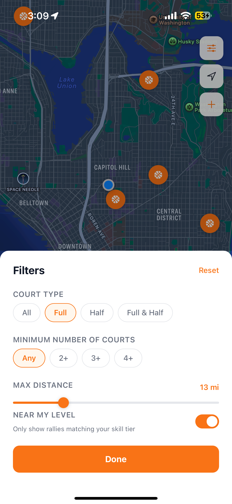
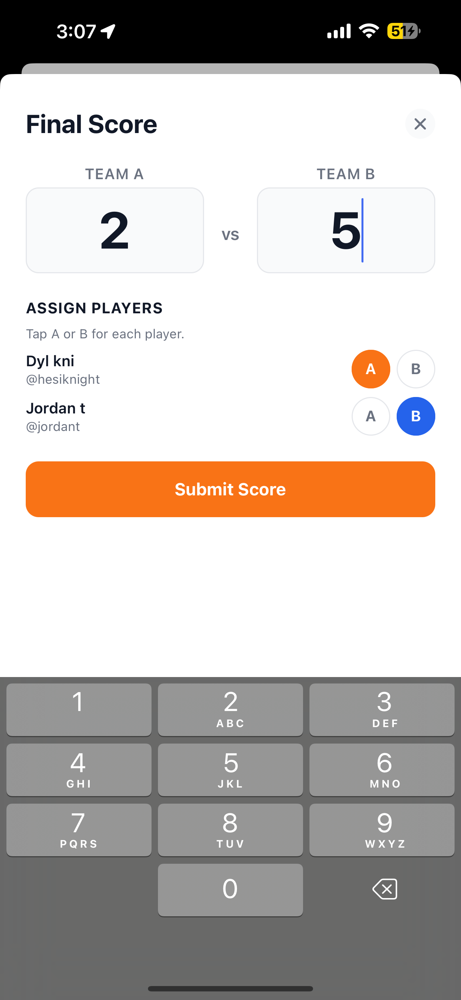
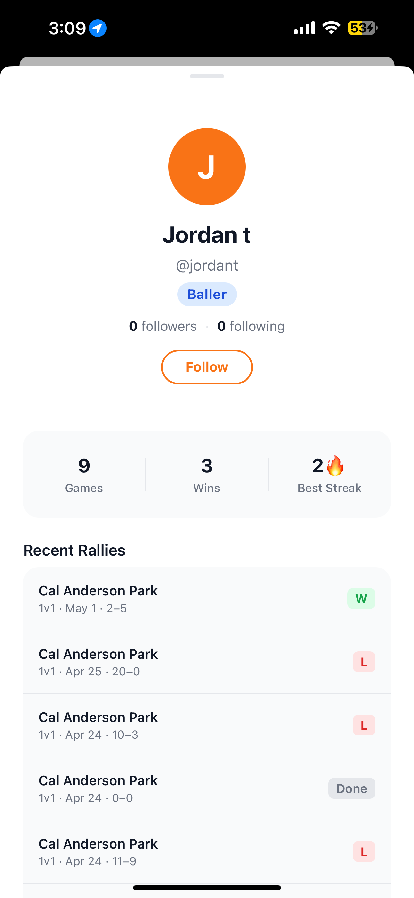
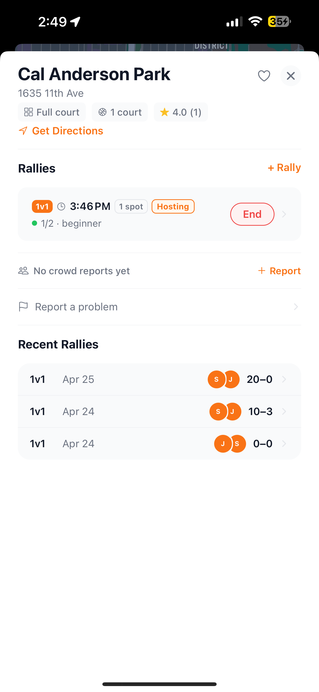

Case Study 03 · Side Project · 2024–2025
A pickup basketball app that lets players find nearby courts, host and join "rallies," track scores, and match with others near their skill level — all from a live map.

The Problem
Pickup basketball players face a recurring problem: they want to play, but they don't know where people are running games right now. Google Maps shows courts — not live activity. Group chats are fragmented. There's no way to know if a court is empty, packed, or running a game at your level.
Hoopr solves this with a live, social court map — where players can host a rally, see who's playing nearby, filter by skill tier, and build a game history over time.
🏀
Rally hosting
🗺️
Live court map
📊
Score tracking
⭐
Skill matching
Key Features
Live court map
Basketball pins across the city show every court. Tap any pin to see active rallies, court type, recent game history, and crowd reports in real time.
Smart filters
Filter by court type (full/half), minimum number of courts, max distance, and "Near My Level" — a toggle that hides rallies outside your skill tier.
Rally hosting + joining
Host a 1v1 or team rally at any court. Players nearby see open spots and join instantly. Get a push notification the moment someone joins your game.
Score tracking + history
Log final scores with team A/B assignment per player. View win/loss history and stats like games played, wins, and best streak on your player profile.
Screens
Court Map
Full-city view of every basketball court. Orange pins indicate courts. Blue dot is the user's location.
Filters Panel
Court type, min count, max distance slider, and skill-tier toggle — with a persistent Done CTA.
Court Detail
Park name, court info, active rallies with spots remaining, and recent rally history with scores.

Final Score Entry
Log scores with team A/B assignment per player. Designed for fast courtside entry.

Player Profile
Games played, wins, best streak, skill badge, and full recent rally log with results.

Live Notification
"Jordan t joined your game at Cal Anderson Park" — real-time push so hosts know their court is filling.
Design Decisions
Map-first, not feed-first
Most social apps default to a feed. Hoopr opens straight to the map because pickup basketball is inherently location-driven. Seeing courts near you immediately answers the core question: "Where can I play right now?" A feed would add a navigation layer before answering that.
"Near My Level" toggle — not a public rating
Skill matching is sensitive. Rather than showing a public skill rating on every rally, a simple toggle lets players opt into seeing only appropriate games. This reduces friction for beginners who might feel excluded, while giving experienced players a clean filtered view.
Score entry designed for courtside use
The final score screen uses a large numeric input — not a spinner or +/− counter — because players log scores in sweaty, hurried conditions. Team A/B assignment via tap buttons instead of dropdowns keeps it fast. The goal was sub-10-second score entry.
Notification copy as social proof
"Jordan t joined your game at Cal Anderson Park" uses the player's name and the specific court — not a generic "Someone joined." Specificity makes the notification feel alive and builds community identity around the courts themselves.
Key Insights
On real-time features
Live data (who's at the court right now) is the hardest and most valuable feature to get right. Stale data is worse than no data — it breaks trust with the core promise of the app.
On community & safety
Early testing showed players wanted to know who they were playing with before committing to a rally. The profile page and recent rally history provide social proof without requiring a formal review system.
On filter design
The filters panel originally had 6+ options. Reducing to 4 cut decision time significantly — every removed filter is a decision the user doesn't have to make.
On PM → designer mindset
Building Hoopr end-to-end forced me to move between "what should this do" and "how should this feel" constantly — exactly the overlap where I do my best work.
Outcome
Hoopr is a fully functional iOS prototype built end-to-end — not just mockups. Real users have tested rally hosting, score logging, and court discovery flows. Currently in active development toward a public launch.
Built
Working iOS prototype
4
Core screens shipped
Tested
With real users & courts